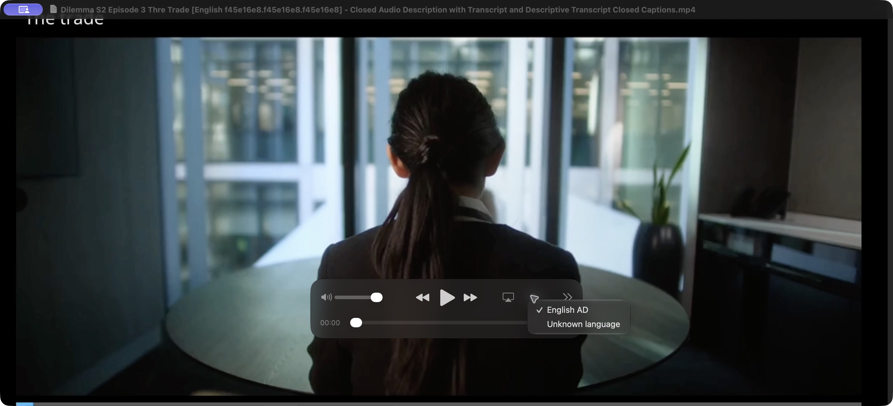
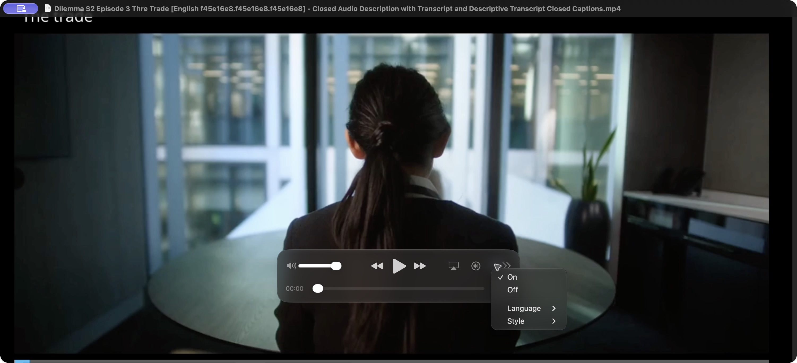
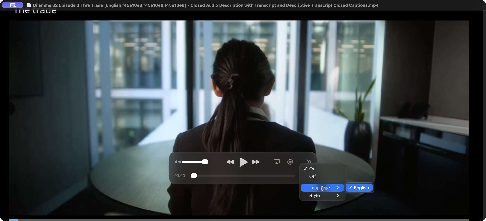

Use this guide when watching a finished video on Windows or macOS, or on YouTube. Audio and captions are separate choices: you can listen to one language or Audio Description (AD) soundtrack while reading a different caption language. Player labels vary with version, language, and the tracks supplied with the video.
Choose the tracks you want
Open the video in a compatible player. Reveal the playback controls or open the player's menu.
Open the audio or language menu and choose an available soundtrack. A described track may be labelled Audio Description, AD, Descriptive Audio, or DVS, with a language name. An original or non-described track plays without added descriptions.
Open the subtitles or captions menu separately and choose an available track or language. When both are supplied, a dialogue transcript contains speech, while a descriptive transcript also includes written visual descriptions.
To stop AD, select an original or non-described soundtrack. To hide selectable captions, choose Off, None, or Disable in the caption menu. Muting or disabling audio stops all sound.
One audio track normally plays at a time. VidiStudio described soundtracks include the original dialogue, music and effects plus narration. Audio and caption selections are independent. Descriptions in another language do not dub the original dialogue.
Formats, codecs and track availability
A container such as MKV, MP4, MOV or M4V holds the video, audio and subtitle streams. Their codecs determine how each stream is decoded. A player must support both the container and the codecs, and expose track selection, for switchable audio and captions to work.
VidiStudio video exports use AAC audio, selectable SubRip subtitles in MKV, and timed-text (tx3g) subtitles in MP4, MOV and M4V. Web Playback uses WebVTT captions. A separate SRT or VTT file is subtitle text, not an audio track. Track names and languages depend on the media metadata; available choices depend on the tracks included and the player's support.
Permanent audio-description mixes cannot be separated into original and described soundtracks by a player. Burned-in captions cannot be turned off. Export selectable tracks when viewers should be able to switch them.
VLC media player — Windows and macOS
Use VLC's audio and subtitle menus to choose from the tracks available in a supported video. Track titles may contain language names, accessibility labels or track numbers.
Use the Audio and Subtitles menus to select available tracks in VLC on Mac.
Switch audio tracks on Mac
Open a video with File > Open File.
Choose Audio > Audio Track, then select the soundtrack or language you want.
To hear audio descriptions, choose a track identified as described audio, when available. To stop descriptions, select an original or non-described track. Reopen the submenu to change your choice.
Audio > Audio Track > Disable silences the soundtrack. Use an original or non-described track to turn off AD while retaining the video's sound.
Switch caption tracks or hide them on Mac
Choose Subtitles > Subtitle Track, then select the caption track or language you want.
When dialogue and descriptive transcript tracks are both available, use their titles to choose the content you want to read.
Choose Subtitles > Subtitle Track > Disable to hide selectable captions. This does not change the audio track.
To load a separate subtitle file, choose Subtitles > Add Subtitle File..., select a supported subtitle file such as SRT, then choose it under Subtitle Track.
Audio and captions are independent choices. VLC may append a language or show a track number rather than a full title. If a track is unavailable, check that it is included in the file and that its format is supported.
Equivalent VLC controls on Windows
Open a video with Media > Open File. Use Audio > Audio Track for the soundtrack, Subtitle > Sub Track for a caption track or Disable, and Subtitle > Add Subtitle File for a separate subtitle file. Menu labels can vary by release.
Windows Media Player and Movies & TV
Media Player (the current Windows app): Open the video and reveal the playback controls. Look for the language/subtitle control, labelled Languages and subtitles or Audio and subtitles in versions that provide it. Open it, select the desired audio track, then select the caption track or Off separately. Available controls and recognized tracks depend on the installed version and file format. If no audio-track selector appears or a track is missing, open the same file in VLC instead.
Movies & TV (also called Films & TV, where installed): During playback, open the speech-bubble menu for subtitles and audio. Choose the audio language or described track in its audio list, then the caption language or Off in its subtitle list. With a keyboard, use Tab or Shift-Tab to reach the subtitles-and-audio button, Enter to open it, and the arrow keys and Enter to choose an option. Narrator identifies the button as the menu for subtitles and audio.
Windows Media Player Legacy: Press Alt to show the menu bar if hidden. Use Play > Audio and language tracks to choose an available soundtrack. Use Play > Lyrics, captions, and subtitles and choose On if available or Off. Legacy caption support is limited; this menu does not guarantee a selectable list of every embedded subtitle language. Use VLC if your MKV or MP4 tracks are unavailable.
Windows accessibility caption appearance settings and Live Captions do not select an embedded audio or subtitle track. Live Captions generates text from sound; it is separate from the caption tracks included in the file.
QuickTime Player — macOS
QuickTime Player offers audio and subtitle choices for tracks it recognizes in a supported movie. Availability depends on the container, codecs, metadata and QuickTime version.
Move the pointer over the movie to reveal playback controls, or use the View menu.
Switch original and described audio
Open a supported movie. MOV, MP4 and M4V can hold selectable audio and timed-text subtitles; the contained codecs must also be supported. Use another compatible player for formats QuickTime cannot open.
Choose View > Languages, then select an available soundtrack. The playback controls also offer an audio selection button, with the accessibility name show audible media selection menu.
Choose an audio-description track when one is available. To stop descriptions, choose an original or non-described soundtrack. Titles may include a language, Audio Description, AD or DVS.
Reopen the menu to switch again. A checkmark identifies the selected option. Muting the player stops all audio.

Select the desired soundtrack in the audio menu. Track labels depend on the media metadata and player.
Unknown language indicates missing or unrecognized language metadata. It does not tell you whether a track contains audio descriptions. Check the track's title and content when the label is unclear.
Turn captions on or off and choose their language
Choose View > Subtitles > On to display available captions, or View > Subtitles > Off to hide them. The caption selection button in the playback controls offers the same choices, with the accessibility name show legible media selection menu.
Choose View > Subtitles > Language and select an available caption language. In the caption popup, open Language to reach these choices.
A checkmark identifies the selected language. Caption selection is independent of the audio soundtrack.

Use On or Off to show or hide selectable captions, independently of audio descriptions.

Open Language to choose from the available caption languages.
A player may group captions by language instead of exposing every individual track title. If the menu does not distinguish the tracks you need, use a compatible player that exposes individual subtitle tracks. Do not assume that all streams in a container will appear as separate menu choices.
VidiStudio MP4/MOV/M4V subtitles use timed text (tx3g). Older QuickTime versions may list subtitle languages directly under View > Subtitles; some offer a separate Show Closed Captioning command for CEA-608 captions. Follow the controls available in the installed version. Turning captions off cannot remove text burned into the picture.
Apple TV app — macOS and Windows
Play a title in the Apple TV app and reveal its controls.
Open the Audio button and select a language or an entry marked AD or Audio Description. Select a non-AD entry to stop descriptions. Some versions combine audio and subtitle choices in one language menu.
Open the Subtitles or Languages button. Turn subtitles on and choose their language; turn them off in the same control.
These choices depend on the title and region. The Apple TV app is not a general-purpose player for every exported local file. On macOS, System Settings > Accessibility > Audio Descriptions can prefer descriptions when available in supported apps. This preference does not create a missing AD track or control every third-party player.
IINA — macOS
Open the video, then use Audio > Audio Track to select the original, described, or other language soundtrack.
Use Subtitle and its subtitle-track list to select a language or None to turn the primary subtitles off. If a secondary subtitle track is active, turn that off separately.
Use Subtitle > Load External Subtitle for a separate subtitle file, then select that track. Track choices are also available in IINA's audio and subtitle panels.
MPC-HC — Windows
Open the video. Use Play > Audio Track to choose an available soundtrack.
Use Play > Subtitle Track to select a caption track, or its subtitle enable/disable option to hide captions. The video context menu also exposes track selection. Menu wording can differ between releases.
If no embedded subtitle track is available, use File > Subtitles > Load Subtitles to load the matching external SRT file.
YouTube — browser on Windows or macOS
Open the video on YouTube and reveal the player controls.
Open Settings (the gear), then Audio track, and choose the desired language or described track when offered. Return here and choose the original or non-described track to stop AD. Audio track only appears when YouTube offers alternative audio for that video.
Open Settings > Subtitles/CC and choose a caption language, or Off. The CC button also toggles captions on and off; it does not switch audio tracks. With the player focused, C toggles captions.
Auto-generated captions and Auto-translate, when offered, are different from creator-supplied caption tracks. A translated caption does not change the spoken soundtrack. Uploading a video with several embedded audio or subtitle tracks does not automatically publish them as YouTube player choices: the creator must add and publish the appropriate tracks in YouTube Studio. A VidiStudio export does not change the original YouTube video.
VidiStudio Web Playback
In a hosted VidiStudio Web Playback player, reveal the controls and use the audio-track menu for Original Audio or Audio Description, and the captions/subtitles menu for a caption track or Off. Only exported selectable tracks appear. Serve the complete exported folder over HTTP or HTTPS; opening its HTML file directly may prevent playback or track loading. Menu appearance depends on the browser and player version.
If a track is missing or will not turn off
Only one audio choice: the file may contain only one soundtrack, or the player may not expose its other tracks. Try the same file in VLC. To offer both original and AD audio, export selectable tracks and include Original Audio.
Captions stay visible after Off: captions may be burned into the picture, or a second subtitle track, Live Captions, or another overlay may be active. Burned-in captions cannot be removed by a player setting.
AD stays audible on every audio choice: narration may already be mixed into the source or only a described soundtrack was exported. A player cannot remove narration from a mixed soundtrack; use an original non-described track or another export.
No captions menu or desired language: check that the export included that caption language with selectable closed captions. A separate SRT/VTT file must be loaded in a player that supports it. TXT, JSON, and a narration-only audio file do not become embedded caption tracks.
Tracks share a language or have generic names: compare track titles or briefly play each track. Player labels and container support vary. For local playback, MKV in VLC or IINA often exposes choices more clearly; QuickTime needs a compatible MOV/MP4/M4V file.
Open descriptions and burned-in captions are permanent. To give viewers control, export selectable audio and closed captions. Keyboard shortcuts belong to the player and can be customized; use its menus when a shortcut behaves differently.